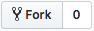
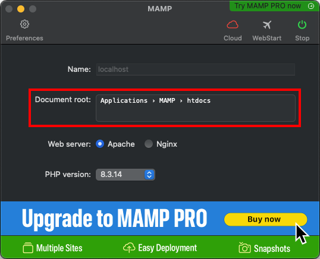
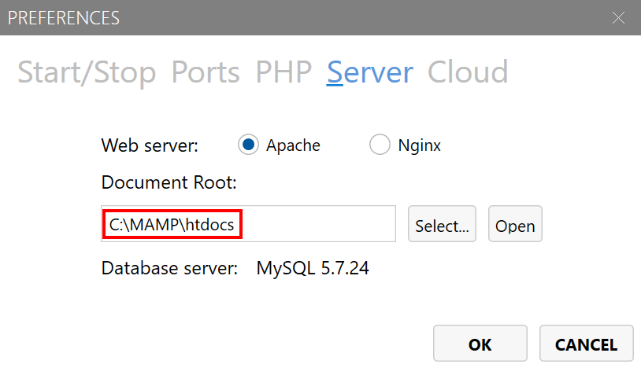
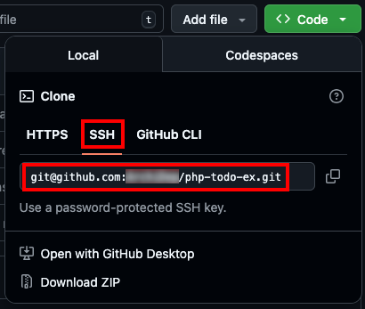
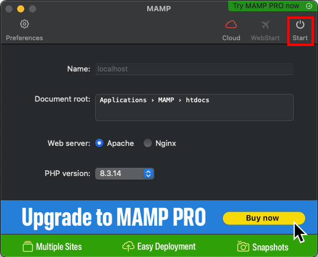
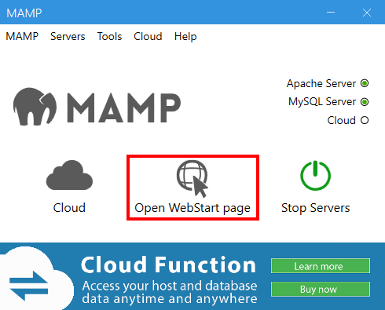
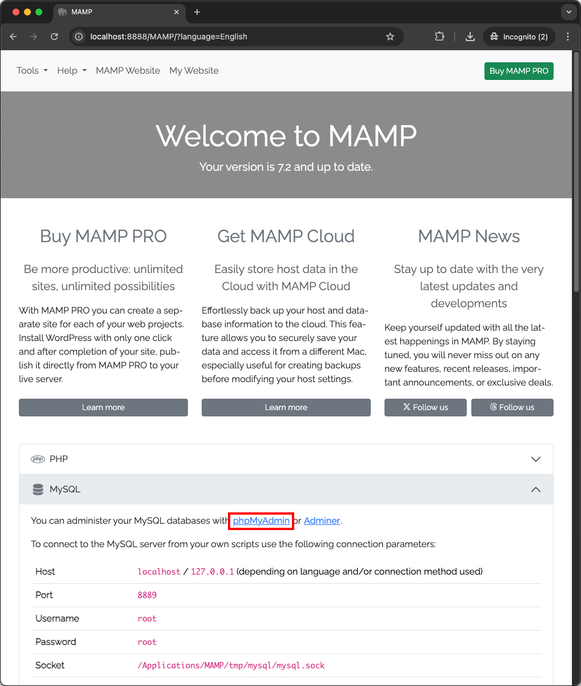
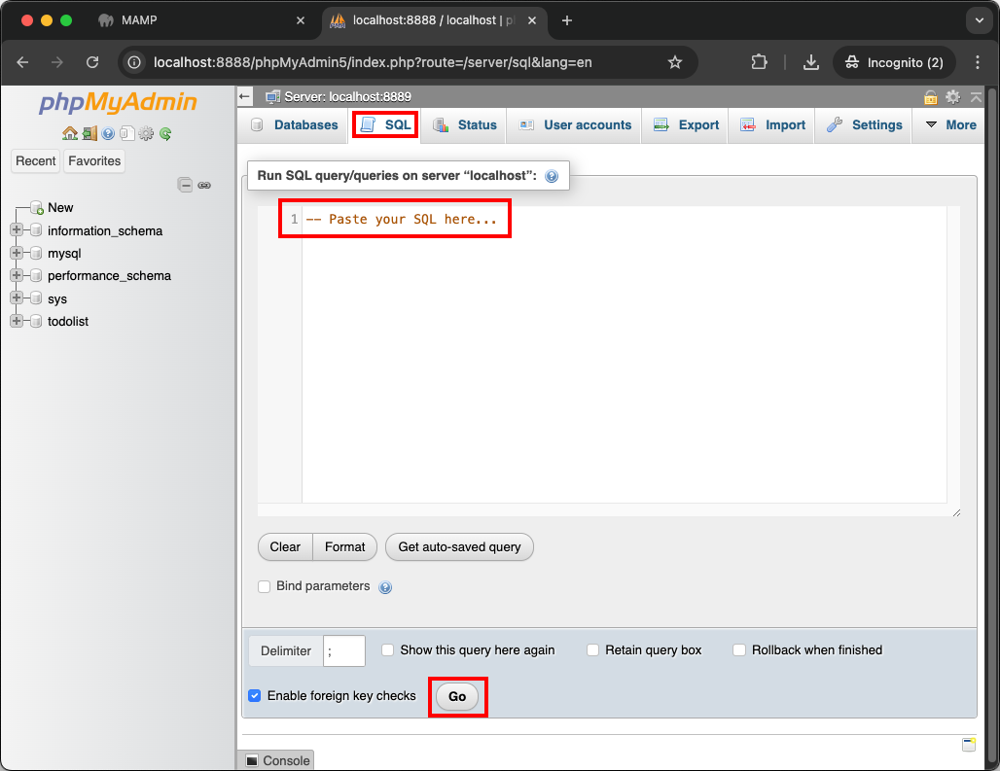
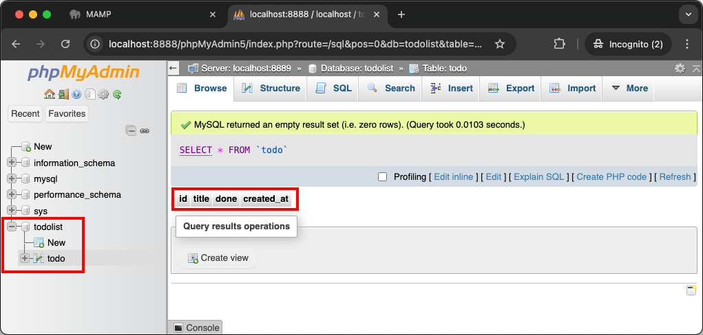
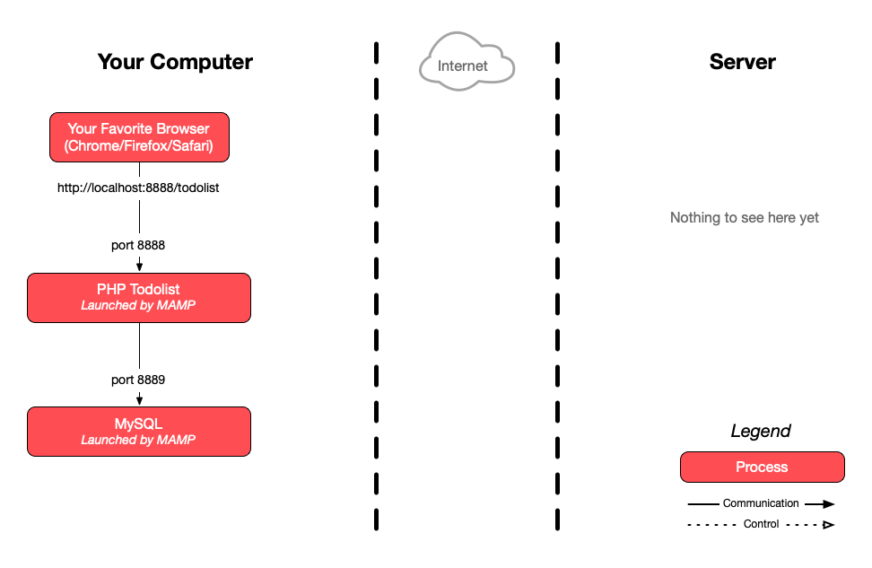

This is a graded exercise that must be done as a group. You cannot deliver it alone, since the whole point is to make you work with Git as a team. Let the teachers know immediately if there is a problem.
PHP Todolist
The goal of this exercise is to collaborate on a simple project on GitHub as a team of 2 or 3.
You will use a partially implemented todo list which is available on
GitHub as a starting point. It is implemented in PHP, HTML and CSS,
and connects to a MySQL database. All the code is in the index.php
file.
Some SQL queries are missing from this source code. The incomplete lines are
marked with the following comment: // IMPLEMENT ME.
On this page
Table of contents
 Graded exercise
Graded exercise
This exercise will be graded. Your submission will be evaluated and will contribute to your final grade in this course.
 Legend
Legend
Parts of this exercise are annotated with the following icons:
-
 A task you MUST perform to complete the exercise
A task you MUST perform to complete the exercise
-
 Optional step that you may perform to make sure that
everything is working correctly, or to set up additional tools that are not required but can
help you
Optional step that you may perform to make sure that
everything is working correctly, or to set up additional tools that are not required but can
help you
-
 Advanced tips on how to go further (or
challenges!)
Advanced tips on how to go further (or
challenges!)
 The end of the exercise
The end of the exercise-
 The architecture of the software you ran or
deployed during this exercise
The architecture of the software you ran or
deployed during this exercise
-
 Troubleshooting tips: how to fix common problems you might
encounter
Troubleshooting tips: how to fix common problems you might
encounter
Form your group
During the rest of this exercise, the first two team members will be referred to as Alice and Bob. The possible third member will be referred to as Chuck.
Form a group and decide who is Alice, Bob (and Chuck if your group has three people).
Warning
Alice: fork and clone the repository
Open the ArchiDep/php-todo-ex repository in your browser and click
the Fork button in the top-right corner of the page (you must be logged in
to GitHub).

This will create a copy of the repository on GitHub that belongs to you (under
your GitHub username instead of ArchiDep).
Alice: add Bob and Chuck as collaborators
In the settings of the forked repository, add Bob (and Chuck) to the list of Collaborators (this will give them push access).
Only the creator of a repository has push access to that repository. For others to push into your repository, you must add them as collaborators.
All team members: install MAMP
We recommend that you use MAMP to run the application on your local machine. Download the installer and then run the free MAMP (not MAMP PRO) application.
Note
You may also use an equivalent solution like WAMP or your own PHP/MySQL setup if you already have one
All team members: clone Alice’s repository
Open MAMP to see where its document root is.
On macOS, the document root is shown in the main window:

To reach it in the macOS Terminal, execute the following command:
$> cd /Applications/MAMP/htdocs
On Windows, the document root is shown in the preferences:

To reach it in the WSL, execute the following command (adapt the path if you chose another installation directory):
$> cd /mnt/c/MAMP/htdocs
Clone Alice’s forked repository on your local machine under MAMP’s document root. You should use the SSH (not the HTTPS) URL:

$> git clone git@github.com:Alice/php-todo-ex.git
Make sure to clone Alice’s forked repository, and not the original course
repository under the ArchiDep organization, or you won’t be able to push your
commits later.
If you prefer, an alternative is also to clone the repository wherever you want, typically in your projects directory for this course, and to temporarily update MAMP’s settings to point its document root directly to this directory:
$> cd /path/to/projects
$> git clone git@github.com:Alice/php-todo-ex.git
# Set MAMP's document root to /path/to/projects/php-todo-ex
All team members: set up the database
Open the MAMP web page.
On macOS, it should open automatically after clicking the Start button:

The opened page should be http://localhost:8888/MAMP/ (with the default settings).
On Windows, click the Open WebStart Page button:

The opened page should be http://localhost/MAMP/ (with the default settings).
You should then be able to reach the phpMyAdmin MySQL administration console from there:

The exercise repository you have cloned to your machine contains a
todolist.sql file you can use to create the database for this project. You
should change the password in the SQL before running it. It will probably be
simpler if all team members agree on the same password to use for this exercise.
Need help choosing a good password? Don’t use something that is hard to remember. You’re better off using a passphrase (here’s a French version).
Run the SQL queries in the todolist.sql file in the SQL tab of
phpMyAdmin’s interface.

If it worked, you should see the todolist database appear in the left sidebar.
You should be able to see the todo table in this database, and see the table
structure that has been created:

All team members: run the application
Open your php-todo-ex directory with your favorite editor (you are not allowed
to have Notepad or Notepad++ as your favorite editor), and update the constants
at the top of index.php to match your local installation:
- Update the password if you changed it.
- If necessary, update the port to use MAMP’s MySQL database port. The port is 8889 on macOS and 3306 on Windows with the default settings. You can see and change this port in MAMP’s preferences.
- Update the base URL to match the name of the todo list’s directory.
You should then be able to access the todo list in your browser at https://localhost:8888/php-todo-ex/ on macOS or http://localhost/php-todo-ex/ on Windows with the default settings. Adapt the port and/or path if necessary.
The todolist will most likely not work yet since you haven’t finished the exercise. But you should at least see an error page.
The value of BASE_URL must match the path of URL at which the application is
available. For example, if you’ve put the cloned php-todo-ex repository in
MAMP’s htdocs directory, the application will be accessible at
http://localhost:8888/php-todo-ex/ on
macOS or http://localhost/php-todo-ex/ on
Windows (with the default document root and ports). In this situation, the value
of BASE_URL should be /php-todo-ex/.
If you have changed MAMP’s document root to point directly to the php-todo-ex
repository, it will be accessible directly under
http://localhost:8888 on macOS or
http://localhost/ on Windows (with the default ports). In
this case, the value of BASE_URL should simply be /.
All team member: do the work
Each team member should choose at least one of the // IMPLEMENT ME comments,
add the missing SQL query to the code, then commit and push their changes to
Alice’s repository on GitHub.
Make sure that each team member contributes something to the repository. These are the requirements that we will evaluate:
- The work must be delivered in the forked repository on GitHub.
- The todo list must work:
- Tasks can be added, toggled and deleted.
- Tasks must be listed from newest to oldest (i.e. by descending creation date).
- Each team member must contribute at least one useful commit:
- A “useful” commit is one that adds or fixes a feature of the todo list.
- The commits must be made on each team member’s machine using their local Git installation, not through GitHub’s web interface.
- The author name and email address of each team member’s commits must be correctly configured.
- Commit messages must be relevant (i.e. describe the change that was made).
End result
As a reference, the fully implemented application should look and behave like this: https://todolist.archidep.ch
Delivery
Send one email per team to both teachers (Simon O. & Simon P.) with:
- The link to the team’s repository on GitHub.
- The list of team members (and their GitHub username if it is not obvious).
Architecture
This is a simplified architecture of the main running processes and communication flow at the end of the exercise (assuming you’ve used MAMP with Apache running on port 8888 and MySQL on port 8889).

{kind=link}
Troubleshooting
Here’s a few tips about some problems you may encounter during this exercise.
Nothing works but I don’t see any errors
When there is a problem with your PHP application, PHP errors may appear only in
the PHP error log, and not in your browser. To see all PHP errors, look in
MAMP’s logs directory (generally found next to the htdocs directory) for a
php_error.log file.
Whether PHP errors appear in the browser depends on parameters in your php.ini
configuration file, such as
error_reporting.
Uncaught PDOException [...] Access denied
If you see an error that looks like this displayed in your browser or in the PHP error log:
PHP Fatal error:
Uncaught PDOException: SQLSTATE[HY000] [1045]
Access denied for user 'todolist'@'localhost' (using password: YES)
It means that you are not using the correct database connection parameters. Make sure that the following parameters are configured correctly:
- The
DB_PASSparameter must be the password you used when you created thetodolistuser with the SQL in thetodolist.sqlfile. - The
DB_PORTparameter must be the port on which you MySQL server is listening. The default MySQL port is 3306, but it may be different depending on your installation method. For example, MAMP uses port 8888 by default.
You may also have made a mistake when creating the MySQL user. If you are not
sure, you can delete the user by running the query DROP USER 'todolist'@'localhost';, then re-run the CREATE USER ... and GRANT ALL PRIVILEGES ... queries of the todolist.sql file.
Invalid argument supplied for foreach()
If you see an error that looks like this displayed in your browser or in the PHP error log:
PHP Warning: Invalid argument supplied for foreach()
It is simply because you have not yet implemented the SELECT query in the
$selectQuery variable. This makes the $items variable empty, which produces
an error in the foreach loop that attempts to iterate over it to display the
todo items.
Adding a todo item redirects to another URL
You have not configured the BASE_URL parameter correctly. This value is used
in the form’s action
attribute when creating a
todo item.
The correct value is the base path under which the application is exposed. For
example, if you are accessing the application at
http://localhost:8888/php-todo-ex/, then BASE_URL should be /php-todo-ex/.
If you are accessing the application at http://localhost:8888, then BASE_URL
should be /.
The application displays correctly but modifications are not taken into account
You may have configured your BASE_URL without a trailing slash (e.g.
/php-todo-ex instead of /php-todo-ex/).
The Apache web server (in MAMP or equivalent) will not treat requests to those two paths in the same way:
- The first path
/php-todo-exwill probably be redirected to/php-todo-ex/with a standard Apache configuration. Any form data submitted in the request will be lost in the redirection. - The second path
/php-todo-ex/refers to the directory by the same name. In that case, a standard Apache configuration will probably execute theindex.phppage in that directory.
Without the trailing slash, your application may display correctly, but form submission may be broken.